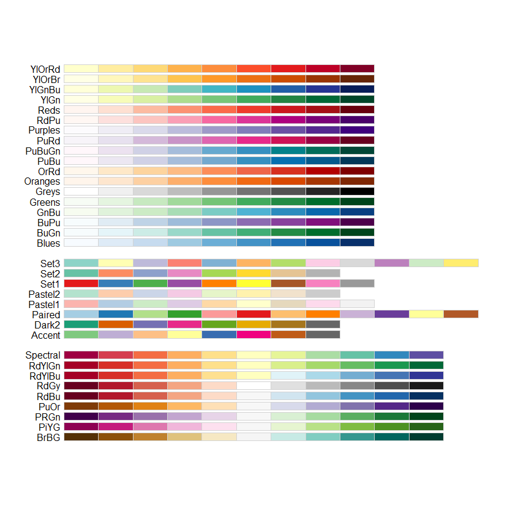
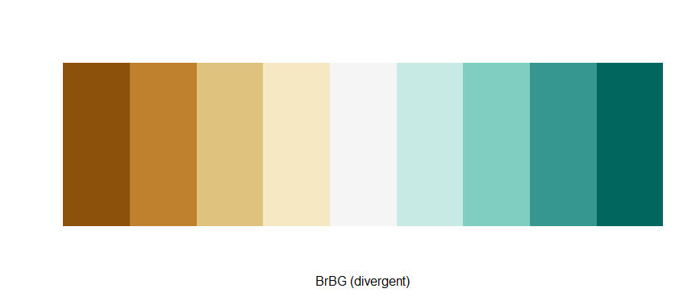
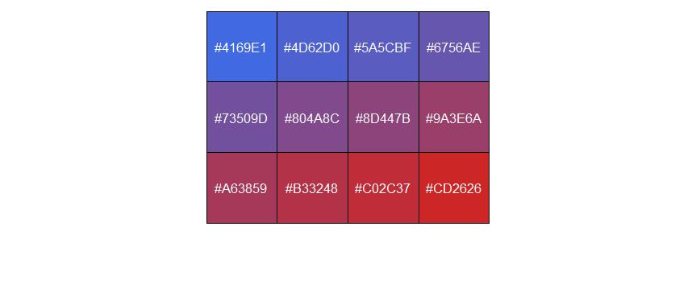

ColorMap
小工具：给分组factor定义颜色
func:
group_factor_colors<- function(alist,colormap_list){
factor_lvls = levels(as.factor(alist))
color_lvls = colormap_list[1:length(factor_lvls)]
names(color_lvls) = factor_lvls
return(color_lvls)
}
Usage:
color_map = c("white","blue","red","brown","gold")
group_names = c("A","B","C","D","A","B","C","D","A","B","C","D","A","B","C","D")
> group_factor_colors(group_names,color_map)
A B C D
"white" "blue" "red" "brown"
pheatmat：annotation_colors中元素需要这个格式
小工具：将分组转换为颜色序列
func:
group_colors<- function(alist,colormap_list){
return(colormap_list[as.numeric(factor(alist))])
}
Usage:
color_map = c("white","blue","red","brown","gold")
group_names = c("A","B","C","D","A","B","C","D","A","B","C","D","A","B","C","D")
> group_colors(group_names,color_map)
[1] "white" "blue" "red" "brown" "white" "blue" "red" "brown" "white" "blue" "red" "brown" "white" "blue" "red" "brown"
R 自带调色板中选颜色
rainbow(n)
heat.colors(n)
terrain.colors(n)
topo.colors(n)
cm.colors(n)
> cm.colors(10)
[1] "#80FFFF" "#99FFFF" "#B3FFFF" "#CCFFFF" "#E6FFFF" "#FFE6FF" "#FFCCFF" "#FFB3FF" "#FF99FF" "#FF80FF"
RColorBrewer 选取调色板
library(RColorBrewer)
display.brewer.all()

> brewer.pal.info
maxcolors category colorblind
BrBG 11 div TRUE
PiYG 11 div TRUE
PRGn 11 div TRUE
PuOr 11 div TRUE
RdBu 11 div TRUE
RdGy 11 div FALSE
RdYlBu 11 div TRUE
RdYlGn 11 div FALSE
Spectral 11 div FALSE
Accent 8 qual FALSE
Dark2 8 qual TRUE
Paired 12 qual TRUE
Pastel1 9 qual FALSE
Pastel2 8 qual FALSE
Set1 9 qual FALSE
Set2 8 qual TRUE
Set3 12 qual FALSE
Blues 9 seq TRUE
BuGn 9 seq TRUE
BuPu 9 seq TRUE
GnBu 9 seq TRUE
Greens 9 seq TRUE
Greys 9 seq TRUE
Oranges 9 seq TRUE
OrRd 9 seq TRUE
PuBu 9 seq TRUE
PuBuGn 9 seq TRUE
PuRd 9 seq TRUE
Purples 9 seq TRUE
RdPu 9 seq TRUE
Reds 9 seq TRUE
YlGn 9 seq TRUE
YlGnBu 9 seq TRUE
YlOrBr 9 seq TRUE
YlOrRd 9 seq TRUE
brewer.pal 提取调色板颜色
> brewer.pal(9,"BrBG")
[1] "#8C510A" "#BF812D" "#DFC27D" "#F6E8C3" "#F5F5F5" "#C7EAE5" "#80CDC1" "#35978F" "#01665E"
> display.brewer.pal(9,"BrBG")

colorRampPalette 生成颜色序列
Example 1:
> colorRampPalette(brewer.pal(9,"Set1"))(50)
[1] "#E41A1C" "#C72A35" "#AB3A4E" "#8F4A68" "#735B81" "#566B9B" "#3A7BB4" "#3A85A8" "#3D8D96" "#419584" "#449D72"
[12] "#48A460" "#4CAD4E" "#56A354" "#629363" "#6E8371" "#7A7380" "#87638F" "#93539D" "#A25392" "#B35A77" "#C4625D"
[23] "#D46A42" "#E57227" "#F67A0D" "#FF8904" "#FF9E0C" "#FFB314" "#FFC81D" "#FFDD25" "#FFF12D" "#F9F432" "#EBD930"
[34] "#DCBD2E" "#CDA12C" "#BF862B" "#B06A29" "#A9572E" "#B65E46" "#C3655F" "#D06C78" "#DE7390" "#EB7AA9" "#F581BE"
[45] "#E585B8" "#D689B1" "#C78DAB" "#B791A5" "#A8959F" "#999999"
Example 2:
> colorRampPalette(c("royalblue","firebrick3"))(12)
[1] "#4169E1" "#4D62D0" "#5A5CBF" "#6756AE" "#73509D" "#804A8C" "#8D447B" "#9A3E6A" "#A63859" "#B33248" "#C02C37"
[12] "#CD2626"
查看颜色序列
mycol <- colorRampPalette(c("royalblue","firebrick3"))(12)
scales::show_col(mycol)

R中颜色名称
> colors()
[1] "white" "aliceblue" "antiquewhite" "antiquewhite1" "antiquewhite2"
[6] "antiquewhite3" "antiquewhite4" "aquamarine" "aquamarine1" "aquamarine2"
[11] "aquamarine3" "aquamarine4" "azure" "azure1" "azure2"
[16] "azure3" "azure4" "beige" "bisque" "bisque1"
[21] "bisque2" "bisque3" "bisque4" "black" "blanchedalmond"
[26] "blue" "blue1" "blue2" "blue3" "blue4"
[31] "blueviolet" "brown" "brown1" "brown2" "brown3"
[36] "brown4" "burlywood" "burlywood1" "burlywood2" "burlywood3"
[41] "burlywood4" "cadetblue" "cadetblue1" "cadetblue2" "cadetblue3"
[46] "cadetblue4" "chartreuse" "chartreuse1" "chartreuse2" "chartreuse3"
[51] "chartreuse4" "chocolate" "chocolate1" "chocolate2" "chocolate3"
[56] "chocolate4" "coral" "coral1" "coral2" "coral3"
[61] "coral4" "cornflowerblue" "cornsilk" "cornsilk1" "cornsilk2"
[66] "cornsilk3" "cornsilk4" "cyan" "cyan1" "cyan2"
[71] "cyan3" "cyan4" "darkblue" "darkcyan" "darkgoldenrod"
[76] "darkgoldenrod1" "darkgoldenrod2" "darkgoldenrod3" "darkgoldenrod4" "darkgray"
[81] "darkgreen" "darkgrey" "darkkhaki" "darkmagenta" "darkolivegreen"
[86] "darkolivegreen1" "darkolivegreen2" "darkolivegreen3" "darkolivegreen4" "darkorange"
[91] "darkorange1" "darkorange2" "darkorange3" "darkorange4" "darkorchid"
[96] "darkorchid1" "darkorchid2" "darkorchid3" "darkorchid4" "darkred"
[101] "darksalmon" "darkseagreen" "darkseagreen1" "darkseagreen2" "darkseagreen3"
[106] "darkseagreen4" "darkslateblue" "darkslategray" "darkslategray1" "darkslategray2"
[111] "darkslategray3" "darkslategray4" "darkslategrey" "darkturquoise" "darkviolet"
[116] "deeppink" "deeppink1" "deeppink2" "deeppink3" "deeppink4"
[121] "deepskyblue" "deepskyblue1" "deepskyblue2" "deepskyblue3" "deepskyblue4"
[126] "dimgray" "dimgrey" "dodgerblue" "dodgerblue1" "dodgerblue2"
[131] "dodgerblue3" "dodgerblue4" "firebrick" "firebrick1" "firebrick2"
[136] "firebrick3" "firebrick4" "floralwhite" "forestgreen" "gainsboro"
[141] "ghostwhite" "gold" "gold1" "gold2" "gold3"
[146] "gold4" "goldenrod" "goldenrod1" "goldenrod2" "goldenrod3"
[151] "goldenrod4" "gray" "gray0" "gray1" "gray2"
[156] "gray3" "gray4" "gray5" "gray6" "gray7"
[161] "gray8" "gray9" "gray10" "gray11" "gray12"
[166] "gray13" "gray14" "gray15" "gray16" "gray17"
[171] "gray18" "gray19" "gray20" "gray21" "gray22"
[176] "gray23" "gray24" "gray25" "gray26" "gray27"
[181] "gray28" "gray29" "gray30" "gray31" "gray32"
[186] "gray33" "gray34" "gray35" "gray36" "gray37"
[191] "gray38" "gray39" "gray40" "gray41" "gray42"
[196] "gray43" "gray44" "gray45" "gray46" "gray47"
[201] "gray48" "gray49" "gray50" "gray51" "gray52"
[206] "gray53" "gray54" "gray55" "gray56" "gray57"
[211] "gray58" "gray59" "gray60" "gray61" "gray62"
[216] "gray63" "gray64" "gray65" "gray66" "gray67"
[221] "gray68" "gray69" "gray70" "gray71" "gray72"
[226] "gray73" "gray74" "gray75" "gray76" "gray77"
[231] "gray78" "gray79" "gray80" "gray81" "gray82"
[236] "gray83" "gray84" "gray85" "gray86" "gray87"
[241] "gray88" "gray89" "gray90" "gray91" "gray92"
[246] "gray93" "gray94" "gray95" "gray96" "gray97"
[251] "gray98" "gray99" "gray100" "green" "green1"
[256] "green2" "green3" "green4" "greenyellow" "grey"
[261] "grey0" "grey1" "grey2" "grey3" "grey4"
[266] "grey5" "grey6" "grey7" "grey8" "grey9"
[271] "grey10" "grey11" "grey12" "grey13" "grey14"
[276] "grey15" "grey16" "grey17" "grey18" "grey19"
[281] "grey20" "grey21" "grey22" "grey23" "grey24"
[286] "grey25" "grey26" "grey27" "grey28" "grey29"
[291] "grey30" "grey31" "grey32" "grey33" "grey34"
[296] "grey35" "grey36" "grey37" "grey38" "grey39"
[301] "grey40" "grey41" "grey42" "grey43" "grey44"
[306] "grey45" "grey46" "grey47" "grey48" "grey49"
[311] "grey50" "grey51" "grey52" "grey53" "grey54"
[316] "grey55" "grey56" "grey57" "grey58" "grey59"
[321] "grey60" "grey61" "grey62" "grey63" "grey64"
[326] "grey65" "grey66" "grey67" "grey68" "grey69"
[331] "grey70" "grey71" "grey72" "grey73" "grey74"
[336] "grey75" "grey76" "grey77" "grey78" "grey79"
[341] "grey80" "grey81" "grey82" "grey83" "grey84"
[346] "grey85" "grey86" "grey87" "grey88" "grey89"
[351] "grey90" "grey91" "grey92" "grey93" "grey94"
[356] "grey95" "grey96" "grey97" "grey98" "grey99"
[361] "grey100" "honeydew" "honeydew1" "honeydew2" "honeydew3"
[366] "honeydew4" "hotpink" "hotpink1" "hotpink2" "hotpink3"
[371] "hotpink4" "indianred" "indianred1" "indianred2" "indianred3"
[376] "indianred4" "ivory" "ivory1" "ivory2" "ivory3"
[381] "ivory4" "khaki" "khaki1" "khaki2" "khaki3"
[386] "khaki4" "lavender" "lavenderblush" "lavenderblush1" "lavenderblush2"
[391] "lavenderblush3" "lavenderblush4" "lawngreen" "lemonchiffon" "lemonchiffon1"
[396] "lemonchiffon2" "lemonchiffon3" "lemonchiffon4" "lightblue" "lightblue1"
[401] "lightblue2" "lightblue3" "lightblue4" "lightcoral" "lightcyan"
[406] "lightcyan1" "lightcyan2" "lightcyan3" "lightcyan4" "lightgoldenrod"
[411] "lightgoldenrod1" "lightgoldenrod2" "lightgoldenrod3" "lightgoldenrod4" "lightgoldenrodyellow"
[416] "lightgray" "lightgreen" "lightgrey" "lightpink" "lightpink1"
[421] "lightpink2" "lightpink3" "lightpink4" "lightsalmon" "lightsalmon1"
[426] "lightsalmon2" "lightsalmon3" "lightsalmon4" "lightseagreen" "lightskyblue"
[431] "lightskyblue1" "lightskyblue2" "lightskyblue3" "lightskyblue4" "lightslateblue"
[436] "lightslategray" "lightslategrey" "lightsteelblue" "lightsteelblue1" "lightsteelblue2"
[441] "lightsteelblue3" "lightsteelblue4" "lightyellow" "lightyellow1" "lightyellow2"
[446] "lightyellow3" "lightyellow4" "limegreen" "linen" "magenta"
[451] "magenta1" "magenta2" "magenta3" "magenta4" "maroon"
[456] "maroon1" "maroon2" "maroon3" "maroon4" "mediumaquamarine"
[461] "mediumblue" "mediumorchid" "mediumorchid1" "mediumorchid2" "mediumorchid3"
[466] "mediumorchid4" "mediumpurple" "mediumpurple1" "mediumpurple2" "mediumpurple3"
[471] "mediumpurple4" "mediumseagreen" "mediumslateblue" "mediumspringgreen" "mediumturquoise"
[476] "mediumvioletred" "midnightblue" "mintcream" "mistyrose" "mistyrose1"
[481] "mistyrose2" "mistyrose3" "mistyrose4" "moccasin" "navajowhite"
[486] "navajowhite1" "navajowhite2" "navajowhite3" "navajowhite4" "navy"
[491] "navyblue" "oldlace" "olivedrab" "olivedrab1" "olivedrab2"
[496] "olivedrab3" "olivedrab4" "orange" "orange1" "orange2"
[501] "orange3" "orange4" "orangered" "orangered1" "orangered2"
[506] "orangered3" "orangered4" "orchid" "orchid1" "orchid2"
[511] "orchid3" "orchid4" "palegoldenrod" "palegreen" "palegreen1"
[516] "palegreen2" "palegreen3" "palegreen4" "paleturquoise" "paleturquoise1"
[521] "paleturquoise2" "paleturquoise3" "paleturquoise4" "palevioletred" "palevioletred1"
[526] "palevioletred2" "palevioletred3" "palevioletred4" "papayawhip" "peachpuff"
[531] "peachpuff1" "peachpuff2" "peachpuff3" "peachpuff4" "peru"
[536] "pink" "pink1" "pink2" "pink3" "pink4"
[541] "plum" "plum1" "plum2" "plum3" "plum4"
[546] "powderblue" "purple" "purple1" "purple2" "purple3"
[551] "purple4" "red" "red1" "red2" "red3"
[556] "red4" "rosybrown" "rosybrown1" "rosybrown2" "rosybrown3"
[561] "rosybrown4" "royalblue" "royalblue1" "royalblue2" "royalblue3"
[566] "royalblue4" "saddlebrown" "salmon" "salmon1" "salmon2"
[571] "salmon3" "salmon4" "sandybrown" "seagreen" "seagreen1"
[576] "seagreen2" "seagreen3" "seagreen4" "seashell" "seashell1"
[581] "seashell2" "seashell3" "seashell4" "sienna" "sienna1"
[586] "sienna2" "sienna3" "sienna4" "skyblue" "skyblue1"
[591] "skyblue2" "skyblue3" "skyblue4" "slateblue" "slateblue1"
[596] "slateblue2" "slateblue3" "slateblue4" "slategray" "slategray1"
[601] "slategray2" "slategray3" "slategray4" "slategrey" "snow"
[606] "snow1" "snow2" "snow3" "snow4" "springgreen"
[611] "springgreen1" "springgreen2" "springgreen3" "springgreen4" "steelblue"
[616] "steelblue1" "steelblue2" "steelblue3" "steelblue4" "tan"
[621] "tan1" "tan2" "tan3" "tan4" "thistle"
[626] "thistle1" "thistle2" "thistle3" "thistle4" "tomato"
[631] "tomato1" "tomato2" "tomato3" "tomato4" "turquoise"
[636] "turquoise1" "turquoise2" "turquoise3" "turquoise4" "violet"
[641] "violetred" "violetred1" "violetred2" "violetred3" "violetred4"
[646] "wheat" "wheat1" "wheat2" "wheat3" "wheat4"
[651] "whitesmoke" "yellow" "yellow1" "yellow2" "yellow3"
[656] "yellow4" "yellowgreen"